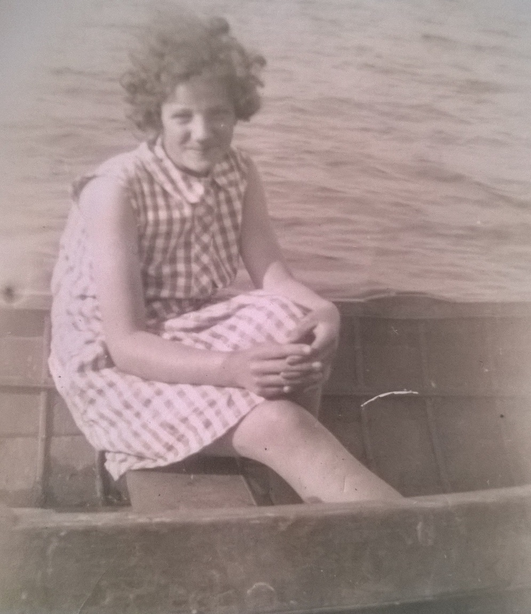
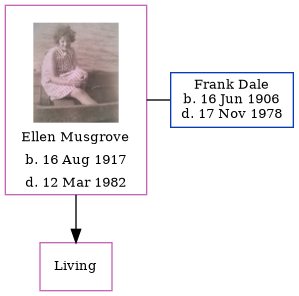

Ellen Florence Dale (née Musgrove) 1917 - 1982
[ Home ] | [ Calendar ] | [ Surnames Index ] | [ Family History ]Ellen Musgrove, the wife of Frank Aubrey George Dale (the third cousin twice-removed on the father's side of Nigel Horne), was born in Poplar, London, England on Aug 16, 19171,2 and. She went to Avery Hill College, Avery Hill, Kent, England She married Frank (with whom she had 1 surviving child) in Sheppey, Kent, England on Jun 2, 19414.
She died on Mar 12, 1982 in Fazakerley, Lancashire, England2,3 (aspiratial Pneumonia; Carcinoma Oesophagus; Breast Carcinoma R.Side).
Citations
- England & Wales births 1837-2006 - Findmypast
- England & Wales deaths 1837-2007 - Findmypast
- http://search.ancestry.co.uk/cgi-bin/sse.dll?db=onsdeath93&h=50463174&ti=5538&indiv=try&gss=pt
- England & Wales Marriages 1837-2005 - Findmypast
Media
Ellen Florence Musgrove

England & Wales deaths 1837-2007 - BMD/D/1982/1/AZ/000257/032
England & Wales marriages 1837-2008 - BMD/M/1941/2/AZ/001058/004
England & Wales births 1837-2006 - BMD/B/1917/3/AZ/000835/062
Family Tree
Generated by ged2site. Last updated on Nov 13, 2024